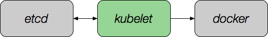

Docker, what else?
(c) George.
Sylvain Bauza / @sylvainbauza / bauzas (Freenode)
Docker Grenoble meetup
19/03/2015
Kubernetes
In old Greek, "Steersman, helmsman, sailing master"
Φιλοσοφία Βιοῦ Κυβερνήτης
"Love of wisdom is the guide of life"
Docker is not...
- cluster-centric
- declarative
- able to scale and schedule thru a massive deployment
Solution:
Docker Entreprise (Swarm and Compose)
Want a big picture ?

Kubernetes Node
|
Minion Daemon:
kubernetes-kubelet

- Primary responsilibity: pod management
- Maintain a record of pod state
- Take instructions from the cluster master
Minion Daemon:
kubernetes-proxy

- Forward requests to the right container
- Load-balance requests
- Ensure minion subnet isolation
etcd
- Highly available key/value data store
- Built-in clustering support
- RAFT consensus-based algorithm for updates

Cluster Management
 |
|
Replication Controllers
 |
|
kubectl
Get details on resource(s)
$ kubectl get pods|services|rc|...Create a resource
$ kubectl create -f some/body.[json|yaml]Resize a ReplicationController
$ kubectl resize --replicas=3 fooExecute a command on a container
$ kubectl exec -p 123456-7890 -c ruby-container -i -t -- bash -ilThe Kubernetes API
- Minions (docker hosts)
- Pods (docker container configurations)
- Services (single, stable name for a set of pods, acts as a LB)
- Replication Controllers (manages the lifecycle of the pods)
- Labels

Labels
- A label or consists of a key and a value (also called a selector)
- A pod can have any number of labels; each label must have a unique key
- Examples:
service=nginx,environment=prod,tier=frontend
Pods
{
"id": "redis-master-pod",
"kind": "Pod",
"apiVersion": "v1beta1",
"desiredState": {
"manifest": {
"version": "v1beta1",
"id": "redis-master-pod",
"containers": [{
"name": "redis-master",
"image": "gurpartap/redis",
"ports": [{ "name": "redis-server", "containerPort": 6379 }]
}]
}
},
"labels": {"name": "redis"}
}
Services
{
"id": "redis-master",
"kind": "Service",
"apiVersion": "v1beta1",
"port": 8888,
"containerPort": 6379,
"selector": {
"name": "redis"
},
"labels": {"name": "redis"}
}
Service env vars
REDIS_PORT='tcp://10.0.29.247:8888'
REDIS_PORT_6379_TCP='tcp://10.0.29.247:8888'
REDIS_PORT_6379_TCP_ADDR='10.0.29.247'
REDIS_PORT_6379_TCP_PORT='8888'
REDIS_PORT_6379_TCP_PROTO='tcp'
REDIS_SERVICE_PORT='8888'
REDIS_SERVICE_HOST='10.0.29.247'
Replication Controllers
{
"id": "redisSlaveController",
"kind": "ReplicationController",
"apiVersion": "v1beta1",
"desiredState": {
"replicas": 2,
"replicaSelector": {"name": "redisslave"},
"podTemplate": {
"desiredState": {
"manifest": {
"version": "v1beta1",
"id": "redisSlaveController",
"containers": [{
"name": "slave",
"image": "brendanburns/redis-slave",
"ports": [{"containerPort": 6379, "hostPort": 8888}]
}]
}
},
"labels": {"name": "redisslave"}
}},
"labels": {"name": "redisslave"}
}